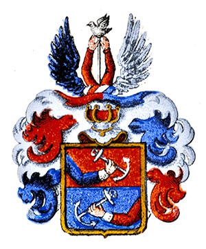

469 Maria Danielsdotter
* 1719 Blomskog (S)
† 1803 Håboda, Torrskog (P)
Blev högst 84 år
938 Daniel Segolsson Ekerot
* 1689 Blomskog (S)
† 1775 Blomskog (S)
Blev högst 86 år
1876 Segol Jonsson Ekerot
* 1640 Blomskog (S)
† 1700 Blomskog (S)
Blev högst 60 år
3752 Jon Andersson
† 1672 Blomskog (S)
1877 Anna Margareta Kråka
* 1664 Långserud (S)
† 1745 Långserud (S)
Blev högst 81 år
3754 Löjtnant Olof Olofsson Kråka d.y
* omkring 1630 Långserud (S)
† 1686 Kastensbol, Långserud (S)
Militär
Blev ca 56 år
3755 Anna Didriksdotter Tank
* omkring 1639 Tyskland
† 1714 Långserud (S)
Blev ca 75 år
939 Katarina Nilsdotter
* 1697 Angunnerud, Långserud (S)
† 1764 Blomskog (S)
Blev högst 67 år
1878 Löjtnant Nils Claesson Kräfting
* 1665
† 1709
Militär
Blev högst 44 år
3756 Generaladjutant Claes Kräfting
* 1624 Bremen, Tyskland
† 1680 Kristianstad (L)
Militär, Godsägare
Blev högst 56 år

3757 Ingrid Olofsdotter Berling
† 1674 Riga, Lettland
1879 Ingrid Olofsdotter
* 1667
† 1732 Byn, Långserud (S)
Blev högst 65 år
3758 Olof Eriksson
† 1698 Långserud (S)
3759 Anna Nilsdotter
† 1729 Långserud (S)